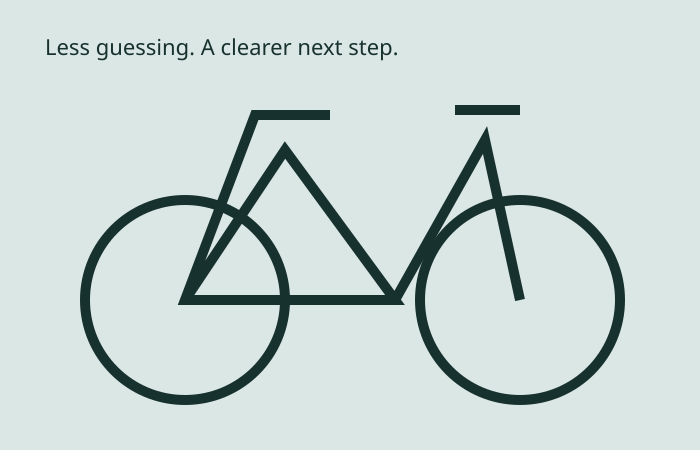

Fictional student project • no actual sales, bookings, messages or professional accounts.
Campus Cycle / fictional Newark service
One request.
A clearer repair.
Tell the shop what you need and when you could drop by. A person would review your request before confirming a time or quoting a repair.
See the request formRequest first. Confirm later. This is not an appointment or a safety assessment.

What we could help with
- Flat tire: ask about a tube or puncture check.
- Tune-up: ask for a general service assessment.
- Brake adjustment: describe a braking concern to a mechanic.
No fixed price or turnaround promise. A real shop would inspect the bike, explain labor and parts, and ask for approval before work.
After you ask
- Save the request reference.
- A shop would confirm scope and availability.
- Approve a quote before any work.
Classroom prototype: no real shop receives these requests. Do not use it to arrange a repair.
Your request history
Pending review means no appointment is confirmed.